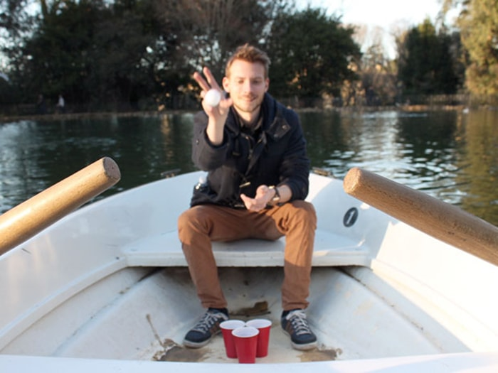
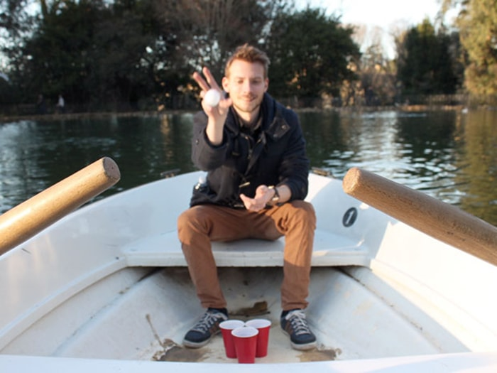

Photography / Web Design
Travel Pong

Travel Pong is a storytelling and photography project made in collaboration with Daniel Asplund. Our goal was to do something unconventional in an extraordinary place, in hopes that we would be the only beings to do so.
That thought ended up taking the form of Travel Pong – the pursuit of finding captivating places around the world where we can play intense games of beer pong. But it's beer pong with some bent rules and a blog to go with it, so we can strengthen our storytelling and photography skills while creating unforgettable memories. This is our way of pushing ourselves to not only travel and write more, but to see these extraordinary places in a new context.
We started by crafting granular yet flexible rules to appropriate the game to be considerate of our surroundings. I designed and built a tumblr theme to collect our games with a scoreboard to keep our audience up to date.
 

Because I'm a sucker for collecting physical momentos, we save a ball from each game and labeled them with the date, location, and scores, to collect in matching branded jars.